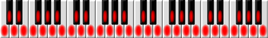

g200kg WebModular
|このプログラムは2017年頃に書いたものです。
音を出すために Web Audio API で既に deprecated な Web Audio API の ScriptProcessorNode または既にサポートされていない Firefox の Audio Data API を使用しています。 信号処理は波形データを直接 Javascript で生成し、出力のみを Web Audio API/Audio Data API を使用します。
今後 Chrome から ScriptProcessorNode が削除されると動作しなくなりますが、過去の資料としてここに置いておきます。
HTML5+Javascriptで書いたモジュラーシンセサイザーです。Javascriptのソフトシンセでリアルタイムに音を合成しています。
Modular Synthesizer written in HTML5+Javascript. Realtime sound genearation with javascript.
Demo
Sample Song 1Sample Song 2



使い方
基本操作
2VCO / 2VCF / 2VCA / 2ENV / 2LFOの構成で各モジュールをパッチコードで接続して音色を作ります。
パッチの接続は入力ジャックと出力ジャック間をマウスでドラッグします。 それぞれのジャックの隣にある三角マークが外を向いているのが出力ジャック、ジャック側を向いている のが入力ジャックになります。入力ジャック同士、出力ジャック同士を接続する事はできません。
1つの出力ジャックから複数の入力に接続する事が可能です。接続を削除する場合は入力ジャックからドラッグして何もない所で 離してください。
音を出すにはキーボードをマウスでクリックします。また、シンセの下側に「MML」の入力欄があります。 ここにメロディをMMLで書いて「Play」を押すと自動演奏します。
| MML文法 | |
|---|---|
| 文字 | 内容 |
| Tnn | テンポの設定 |
| A,B,C,D,E,F,G | 音名。後ろに続く数字で音符の長さを指定 |
| +,#,- | シャープ/フラットを指定(+と#は同じ意味) |
| R | 休符。後ろに続く数字で音符の長さを指定 |
| Lnn | デフォルトの音符の長さ |
| . | 付点 |
| Onn | オクターブ指定 |
| <,> | 以降をオクターブシフト |
| & | タイ |
キーマッピング
キーボードで弾く事もできます。各キーは次のように割り当てられています。
| 1 | 2 C#3 | 3 D#3 | 4 | 5 F#3 | 6 G#3 | 7 A#3 | 8 | 9 C#4 | 0 D#4 |
||||||||||||
| Q C3 | W D3 | E E3 | R F3 | T G3 | Y A3 | U B3 | I C4 | O D4 | P E4 |
||||||||||||
| A | S C#2 | D D#2 | F | G F#2 | H G#2 | J A#2 | K | L C#3 | ; D#3 |
||||||||||||
| Z C2 | X D2 | C E2 | V F2 | B G2 | N A2 | M B2 | , C3 | . D3 | / | ||||||||||||
技術情報
WebModularはオーディオを扱うために'Web Audio API' (Chrome) または'Audio Data API' (Firefox)を 使用しています。また、どちらも使えない場合はFlashオブジェクトを利用します。その判定部分は次の ようになっています。
API = 0;
if (typeof (webkitAudioContext) != "undefined") {
API = 1; // WebAudioAPI
outbufsize = 1024;
...
}
else if (typeof (Audio) == "function") {
audio = new Audio();
if (typeof (audio.mozSetup) == "function") {
API = 2; // AudioDataAPI
outbufsize = 1024;
...
}
}
if (API == 0) {
// Use Flash Object
outbufsize = 4096;
...
}
Flashオブジェクトは単にPCMデータの出力にのみ使用し、Flash使用時でも全ての波形の生成処理は Javascript上で行っています。 ただし残念ながらFlash使用時は出力バッファのサイズ、(=レイテンシー)は4倍になっています。 これはFlashの制限とJavascript=>Actionscriptの受け渡しのオーバーヘッド、また Javascriptエンジンそのもののパフォーマンス(特にTypedArrayが使えない事)によるものです。
Usage
Consist modules of 2VCO / 2VCF / 2VCA / 2ENV / 2LFO.
Drag mouse between input-jack and output-jack for connect modules. the triangle marks toward outside means output-jack, and toward the jack means a input-jack. input to input, or output to output connection is not allowed.one output-jack to multiple input-jack connection is possible.
Drag from input-jack to anywhere except jacks for delete a connection.
Modules Description / Tutorial Page
The 'MML'(Music Macro Language) string in the MML field can be played.
| Char | Description |
| Tnn | Tempo setting |
| A,B,C,D,E,F,G | Note name. following number is duration. |
| +,#,- | sharp/flat |
| R | rest |
| Lnn | default note duration |
| . | Dotted note |
| Onn | Octave |
| <,> | Octave shift |
| & | tie |
Key Mapping
| 1 | 2 C#3 | 3 D#3 | 4 | 5 F#3 | 6 G#3 | 7 A#3 | 8 | 9 C#4 | 0 D#4 |
||||||||||||
| Q C3 | W D3 | E E3 | R F3 | T G3 | Y A3 | U B3 | I C4 | O D4 | P E4 |
||||||||||||
| A | S C#2 | D D#2 | F | G F#2 | H G#2 | J A#2 | K | L C#3 | ; D#3 |
||||||||||||
| Z C2 | X D2 | C E2 | V F2 | B G2 | N A2 | M B2 | , C3 | . D3 | / | ||||||||||||
Technology
WebModular use 'Web Audio API' (Chrome) or 'Audio Data API' (Firefox) if available. The Flash object is used if neither API is available.
API = 0;
if (typeof (webkitAudioContext) != "undefined") {
API = 1; // WebAudioAPI
outbufsize = 1024;
...
}
else if (typeof (Audio) == "function") {
audio = new Audio();
if (typeof (audio.mozSetup) == "function") {
API = 2; // AudioDataAPI
outbufsize = 1024;
...
}
}
if (API == 0) {
// Use Flash Object
outbufsize = 4096;
...
}
All PCM data generation (DSP) is done in javascript even if the Flash object mode. The Flash is just for PCM data output. Unfortunately, output buffer of the Flash mode is 4 times the size of others. Because of the Flash limitation, javascript=>actionscript overhead and the javascript engine performance (especially the TypedArray availability).